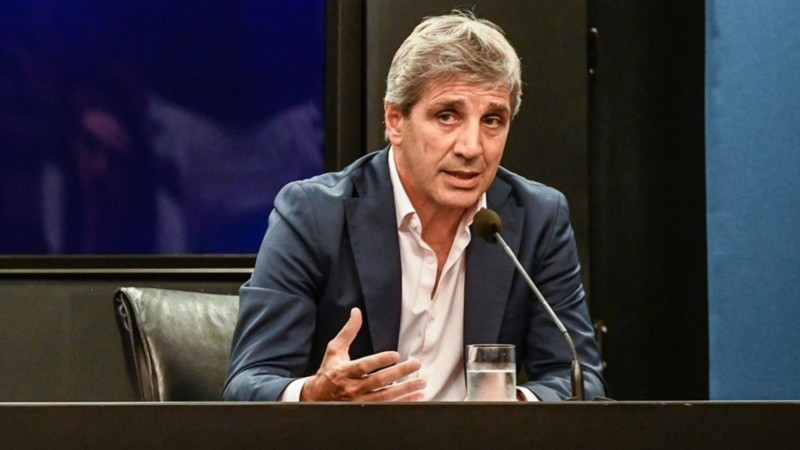
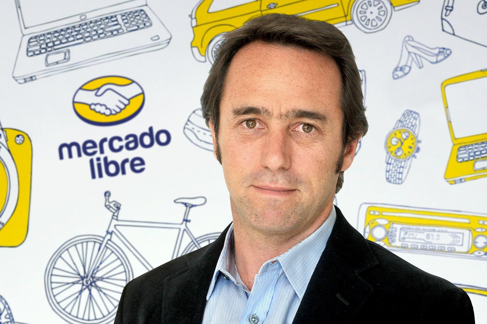
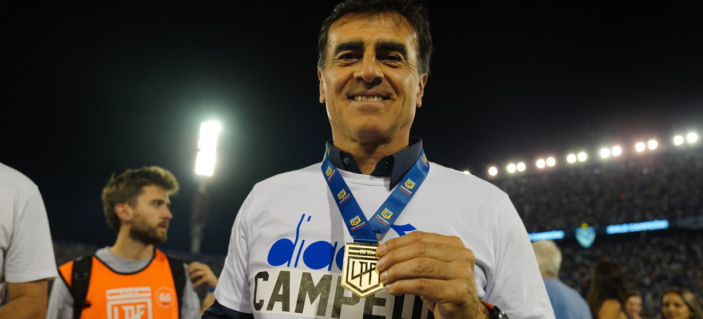

Nuevo Plan Económico: El Ministro Anuncia Medidas para Controlar la Inflación
El Ministro de Economía presentó un paquete de medidas que incluyen controles de precios y estímulos a la producción local. "Estamos trabajando para estabilizar la economía", aseguró.
Leer más

El fundador del gigante del e-commerce pasará a ocupar el cargo de Executive Chairman; el nuevo Chief Executive Officer será Ariel Szarfsztejn
Los mejores memes por la eliminación de River ante Platense: las burlas de los hinchas de Boca y el rol de Falcón Pérez, los elegidos

El Consejo de Fútbol de Boca buscará un técnico de amplia experiencia y que vea el fútbol simple. Pican en punta Quinteros, Insúa y Russo.